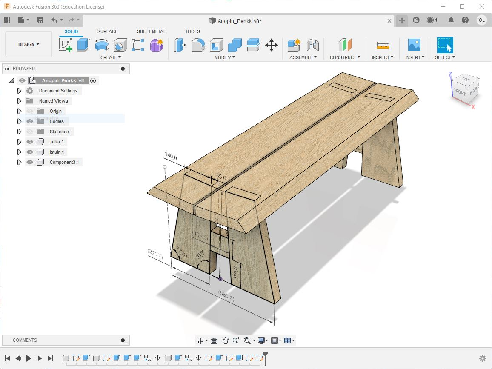
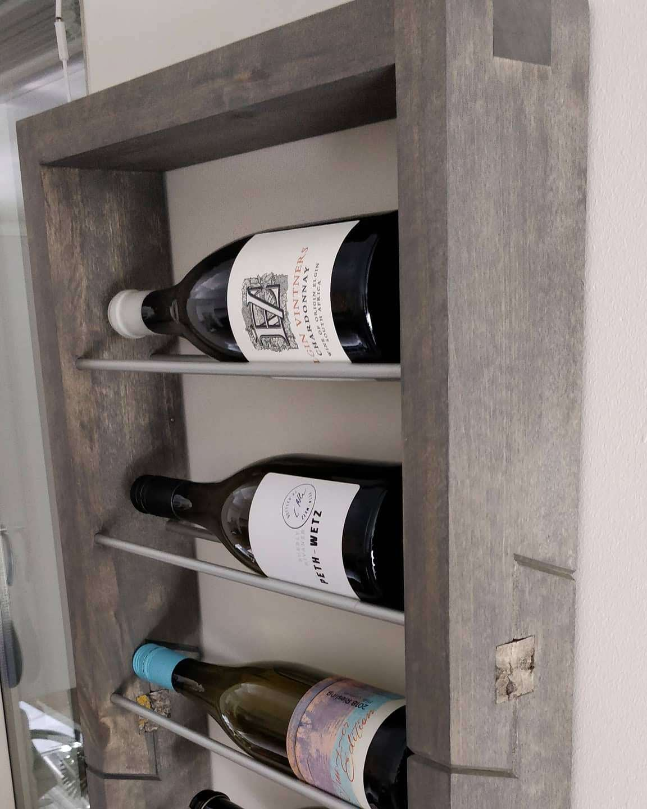
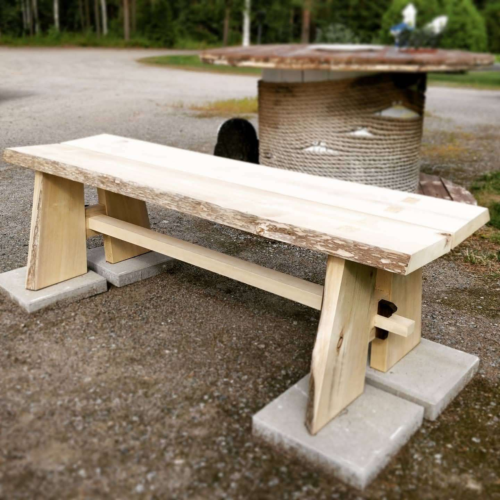

- Etusivu - Harrastukset - Portfolio -
Kotiverkon suunnittelu ja toteutus
Muutimme alkuvuonna uuteen paritaloon, jossa oli CAT6-sisäverkkokaapelointi joka huoneessa.
Päätin itseopiskelutarkoituksessa totetuttaa kotiverkkolaitteiston järeämmällä ratkaisulla.
Lähtökohtana kaikki mahdolliset kytketään ensisijaisesti kaapelilla ja loput sitten toimivat wlanissa.
Lisäksi henkilökohtaiset laitteet on eriytetty omaan suojattuun verkon osaan
ja "kaupalliset" internettiä käyttävät laitteet ovat omassa verkko-osassaan.
Reitittimeksi valikoitui Ubiquitin EdgeRouter X-SFP monipuolisuuden ja edullisen hinnan puolesta,
wlaniksi saman valmistajan UAP-AC-Lite tukiasema.
Lisää asiasta blogissani.
Raspberry Pi ja Linux
Tutustuin Raspberry-tietokoneeseen sen ensimmäisen version aikaan.
Tämän johdosta myös tutustuin linuxiin enemmän ja päädyin käyttämään sitä kotitietokoneen
pääasiallisena käyttöjärjestelmänäkin. Nyt tästä on kulunut jo 6-vuotta aikaa
ja linux on edelleen pääasiallinen käyttöjärjestelmä.
Raspberrylle olen ohjelmoinut pythonilla lämpötilanluku-ohjelman käyttäen
DS1820 lämpötila-antureita 1wire-väylässä.
rpi-temp-logger
Blogi
Lisää omista näpräysistäni voi lukea blogistani, jota epäsäännöllisesti kirjoittelen
muistiinpanoiksi ja asioiden kertaukseksi. Jos joku muukin siitä jotain saa irti on se plussaa.
Elektroniikkaa ja tietotekniikkaa
Puutöiden mallinnus
Käytän puutöiden suunnitteluun Fusion 360 -ohjelmaa. Se on ilmainen harrastekäyttöön
ja kohtuu helppo lähestyä. Tutoriaaleja löytyy myös paljon youtubesta ym.
Parhaita ominaisuuksia suunnittelussa on parametrisuus, jolla voi helposti
koittaa eri mittoja ja koko malli muuttuu automaattisesti asetettujen sääntöjen
mukaiseen uusiin mittoihin.

Puutyöt ovat rauhan tyyssija, missä saa ilman kiirettä näpertää omilla käsillä
ja näkee oman kädenjälkensä samantien.
Muutama projekti mitä olen tehnyt:
|  |  |
| Viiniteline | Ulkopenkki | arj
Lapsena pyöräilin paljon ja yksi muistuvin matka oli, kun pyöräilimme isän kanssa mummolaan isostakyröstö
kauhavalle.
15-vuotiaaksi matkaa tuli kiitettävät 60 km. Olisikohan aikaa mennyt joku 8 tuntia uimataukoineen.
Nykypäivänä olen kulkenut työmatkani pääasiassa pyörällä ja vapaa-ajan ajoja maastossa fatbikella.
Juossut olen aina satunnaisesti, mutta nyt olisi taas intoa juosta, mutta povi meinaa vioitella.
Tavoitteenani olisikin juosta vielä puolimaratooni joku päivä.
{kind=link}
{kind=link}
{kind=link}